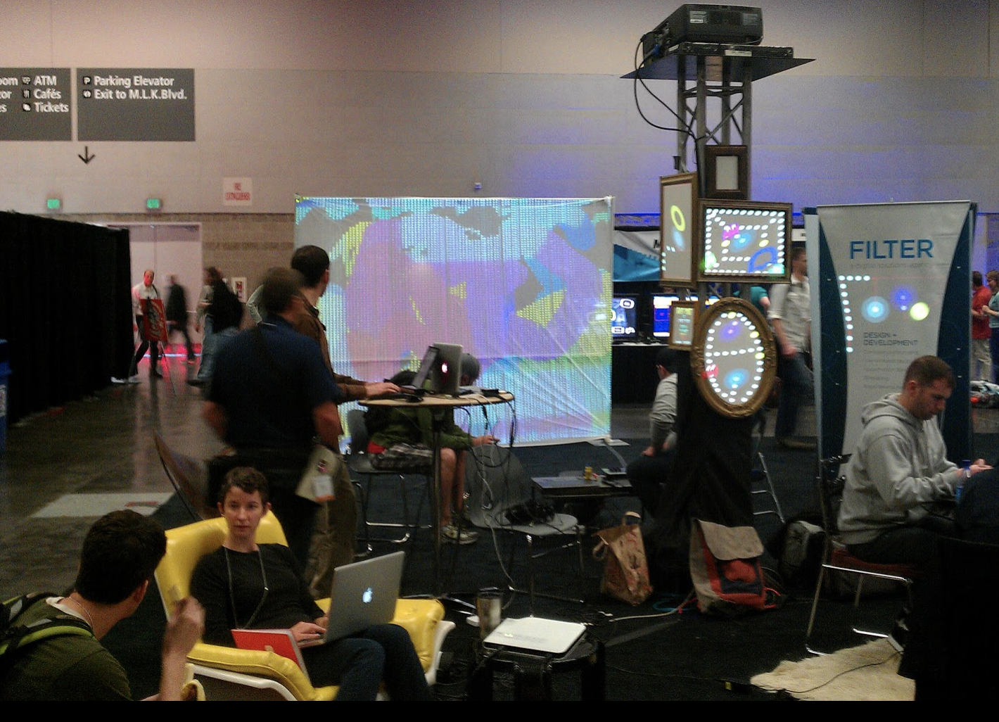
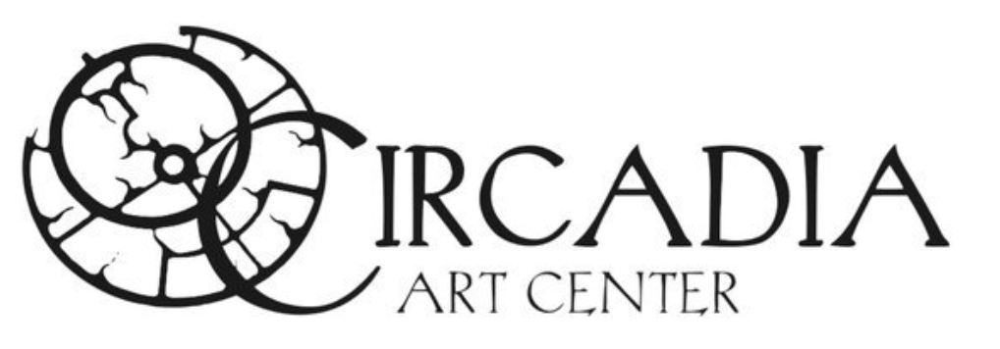
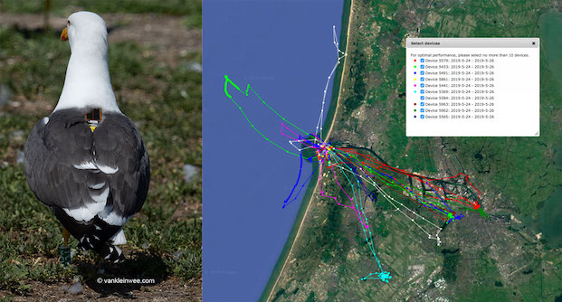
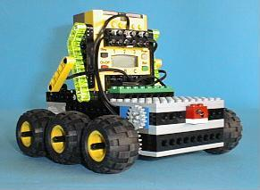
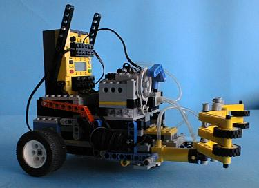

Scott Lee Davis


scottleedavis [at] gmail.com, resume
Timeline of Experience
October 2017 - Now
I am employed by CollegeNET as a Technical Lead in Applyweb Self Service.
- Lead UI, API and CLI teams focused on providing self service capabilities for ApplyWeb®
- Designed and implemented frontend, backend and DevOPS architecture
I have contributed open source code to Mattermost server, webapp and mobile. I also have created a handful of plugins.
- mattermost-plugin-remind sets reminders for users and channels
- mattermost-plugin-noexif removes EXIF information from images
- mattermost-plugin-watermark adds a hidden steganography in images
- mattermost-plugin-ascii-plot converts plot data in post to ascii charts
November 2016 - June 2017
I was employed by Summit Security Group as a security engineer.
- Produced vulnerability assessments of external and internal systems for clients including code reviews
- Participated in Social Engineering assessments including physical and phishing exercises
December 2015 - September 2016
I was employed as a application security researcher at Rapid7 and worked closely with the development team of AppSpider.
- https://github.com/sdavis-r7
- As a team member, we helped forge Application Security practices, products and services.
- As a developer, I planned, built, and deployed the out-of-band vulnerability callback API “AppSpidered” . I also built the ReactJS scan interface for AppSpider
- As a researcher, I discovered vulnerabilities, wrote exploits, and offered patching to the OpenAPI (Swagger) ecosystem.
May 2013 - December 2015
I was employed by Webtrends.
- As the Engineering Security Team Lead, I provided vulnerability assessments, code review, threat modeling and built automation to augment existing Continuous Integration workflows.
- As a member of the data services team, I was immersed in all layers of our SaaS components and focused development on data query architecture.
- As a member of the application team, I wrote client side and server side components for portfolio applications: account settings, action center, optimize, and streams
November 2012 - May 2013
I worked at a startup named Aspen Labs LLC.
- Furthered development in internationalization and visualization elements in products, while also contributing to the architecture of a continuous integration pipeline.
March 2010 - November 2012
I cofounded Collage Creative aimed at providing custom wordpress solutions, as well provided security services for the organization and customers.
November 2009 - July 2011
I was a projection interaction artist
- Designed projection light systems for interactive experiences at dance shows, festivals, “OMSI After Dark” and after school programs. Designed custom extensions to the ruby based LUZ software
- Spearheaded interactive projection gaming at Really Big Video for first Thursday’s art walk event in the Pearl District. Designed, setup and performed projection stage elements for NikeEM 2011

March 2009 - November 2009
I was a co-founder of Circadia Art Center, wearing many hats.
- Information Services: Network Infrastructure, Surveillance, website, social media
- Business Planning: Articles of Incorporation, Bylaws, Budget, Web-presence, legal contracts
- Business Management: Event Coordination, Class Scheduling, Alcohol procurement, Tenant relationships

May 2008 - March 2009
Employed at nLight Photonics as a software engineer. I orchestrated the development of kitting algorithms that drove the tiered levels of the diode manufacturing process feeding an ERP system. I worked closely with engineers in design, implementation and execution of the complete laser product creation, assembly, testing and shipping flow.
June 2006 - May 2008
Employed as scientific software engineer and grad student in Computational Geo Ecology.
- Member of an avian migration studies research team.
- Data collection: I developed embedded firmware for avian GPS tracking data loggers and co-built the remote data collection system.
- Mathematical modeling: I created an agent based ecological modeling framework in Matlab, and taught MSc students on its use.
- Visualization: I created and shared as open source, the Google Earth Toolbox.


September 2005 - May 2006
I worked for SAPA Aluminum as a remote contract software engineer. I developed Axapta 3.0 modules for the tracking and analysis of aluminum production facilities.
February 2003 - July 2005
Worked as a senior software engineer at Taiyo Yuden R&D Center of America. I was responsible for establishing tangible products from components and partnerships guided by leadership. I was a member of the IEEE 802.15.4 working group, and built several proof of concepts based on low power wireless sensor networks. Additionally, I wrote firmware and drivers for various projects including keyboards, and wireless network cards.
September 2002 - December 2002
Worked as a part-time instructor at Clark Community College, Fall 2002 quarter
- CSCI 202 Intro to C++
- Programming with SQL Server 2000
- A+ OS Technologies
May 2002
- Graduated from Westminster College with 3.73 GPA
- Bemis, NSF, and Westminster Excellence scholarships
I built a voice controlled lego mindstorms project with two robots that maneuvered around an 8’x10’ board looking for colored cans and moving them to colored squares.


June 2000 - July 2002
Worked at Texscan MSI writing Java, Perl, C and C++
- Built video streaming service for school education
- Developed company website with online purchasing database
- Designed Linux drivers for: Hardware Watchdog, Real-Time Clock